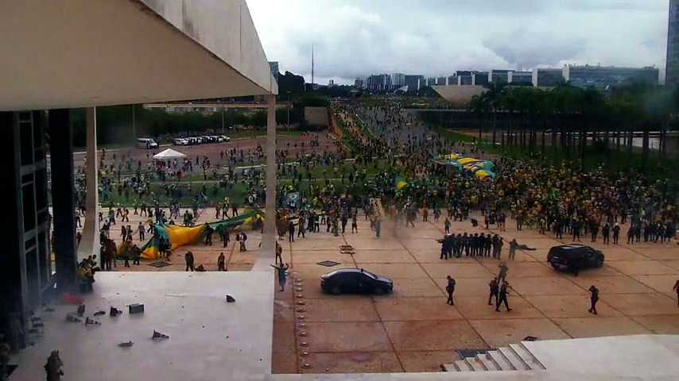
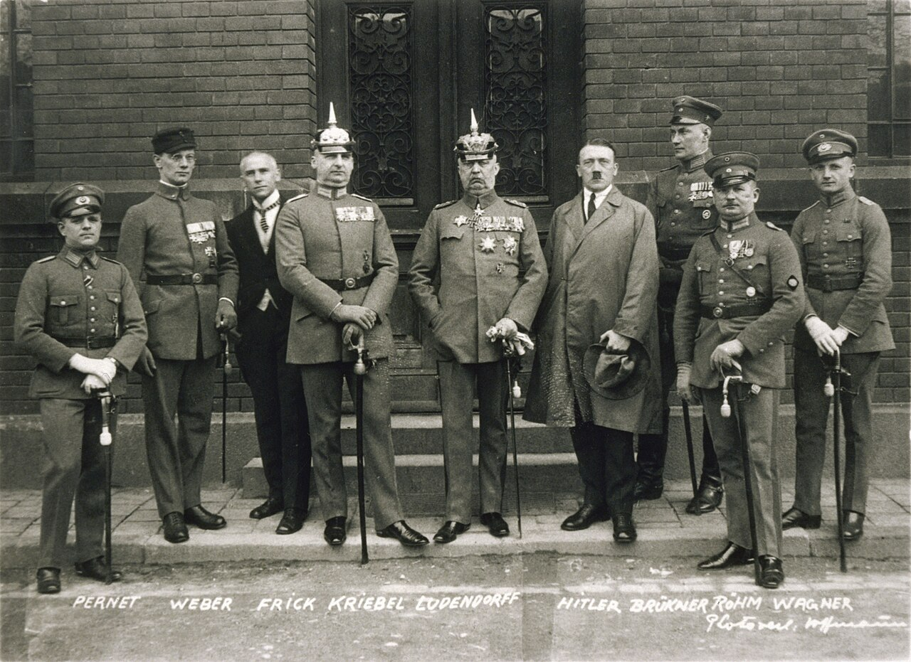
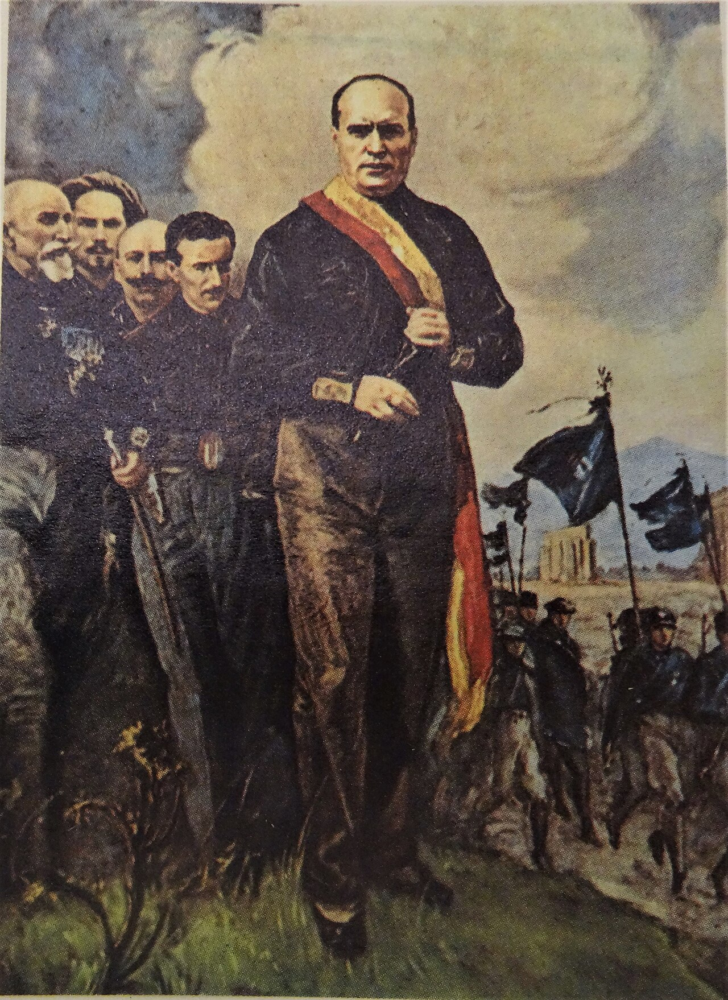
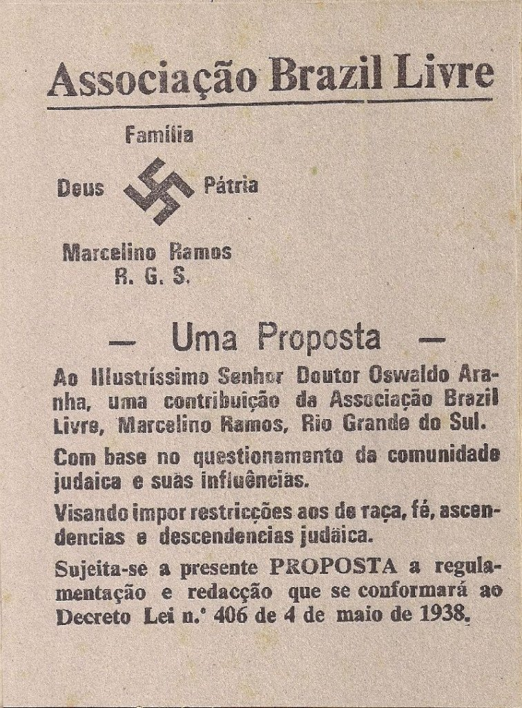
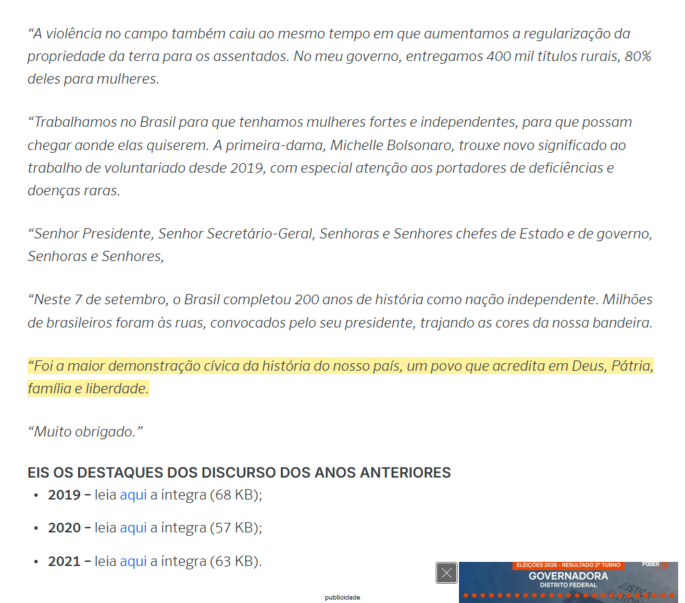
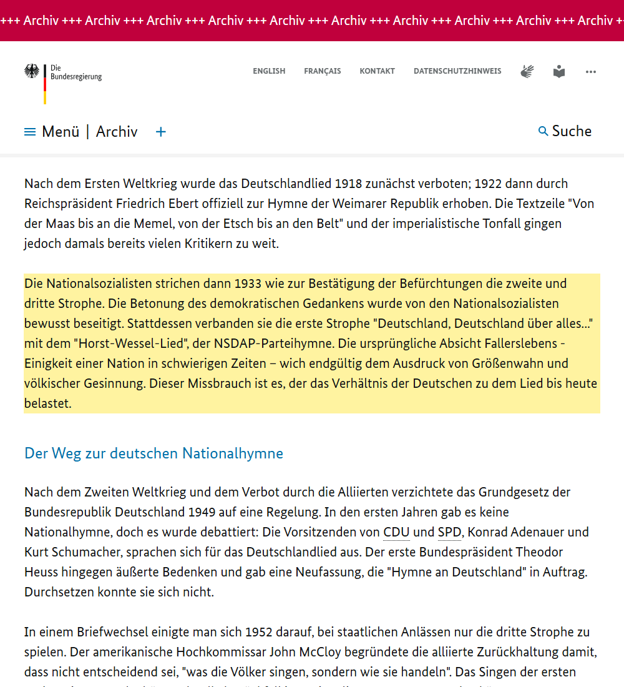

Mensagens enviadas
Os textos que circularam no WhatsApp, na íntegra e na ordem de envio, com as imagens e o áudio que os acompanharam. O botão copia o texto com a formatação do WhatsApp (*negrito*, _itálico_).
Compilado elaborado com auxílio de inteligência artificial (Claude, da Anthropic) a partir de reportagens, decisões judiciais, documentos oficiais e vídeos publicados. Cada informação traz a fonte ao lado; datas, números e citações foram conferidos nela. A classificação do bolsonarismo como fascismo é objeto de debate entre historiadores e aparece aqui como tal.
Errata. A mensagem 1 do pacote atribui ao 7 de setembro de 2021 a frase "só saio preso, morto ou com a vitória".
A frase foi dita em 28/08/2021, em Goiânia, num encontro de líderes evangélicos ("estar preso, ser morto ou a vitória"), e Bolsonaro acrescentou que a primeira opção não existe.
No 7 de setembro, na Paulista, ele chamou Moraes de "canalha" e disse que "nunca" seria preso. Fonte: Poder360.
1. Pacote do grupo (26/10/2026)
Mensagem 1 de 3: aviso e cronologia
Aviso: texto elaborado com auxílio de inteligência artificial (Claude, da Anthropic), a partir de reportagens, decisões judiciais e documentos históricos listados ao final. Datas e citações foram conferidas nas fontes. A classificação do bolsonarismo como fascismo é objeto de debate entre historiadores e aparece aqui como tal.
Bolsonarismo: cronologia documentada (1999–2026)
1999 – Em entrevista à TV Bandeirantes (programa Câmera Aberta), o então deputado Jair Bolsonaro defendeu o fechamento do Congresso, afirmou que, se fosse presidente, daria golpe "no mesmo dia" e disse que o país só mudaria com uma guerra civil que matasse cerca de 30 mil pessoas, a começar pelo presidente Fernando Henrique Cardoso.
2014 – Disse à deputada Maria do Rosário que não a estupraria porque ela "não merece". Foi condenado a indenizá-la; o STJ manteve a condenação em 2017 e o STF negou o último recurso em 2019.
2016 – Na votação do impeachment, dedicou o voto ao coronel Carlos Alberto Brilhante Ustra, "o pavor de Dilma Rousseff". Ustra foi o primeiro militar reconhecido pela Justiça brasileira como torturador; a Comissão Nacional da Verdade estima cerca de 50 mortos ou desaparecidos e 500 torturados sob seu comando no DOI-Codi.
2017 – "As minorias têm que se curvar às maiorias" (Paraíba, fevereiro). No mesmo ano, sobre os filhos: "foram quatro homens, a quinta eu dei uma fraquejada e veio uma mulher".
2018 – Em vídeo transmitido na Avenida Paulista: "Esses marginais vermelhos serão banidos de nossa pátria." Aos adversários, ofereceu a prisão ou o exílio.
2020 – Em janeiro, o secretário especial de Cultura, Roberto Alvim, publicou um vídeo com trechos de um discurso de Joseph Goebbels, ministro da Propaganda de Hitler, com ópera de Wagner ao fundo; foi exonerado no dia seguinte. Em 19 de abril, Bolsonaro discursou em frente ao Quartel-General do Exército, num ato que pedia o AI-5 e o fechamento do Congresso.
2021 – Em 7 de setembro, na Paulista: "Só saio preso, morto ou com a vitória." No mesmo discurso, anunciou que não cumpriria mais as decisões do ministro Alexandre de Moraes.
2022 – Reuniu embaixadores estrangeiros para atacar as urnas eletrônicas, o que levou o TSE a torná-lo inelegível em 2023. Perdeu a eleição. Segundo depoimento do comandante do Exército, general Freire Gomes, apresentou aos comandantes militares, em 7 de dezembro, uma minuta de decreto golpista. No mesmo período, militares das forças especiais elaboraram o plano "Punhal Verde e Amarelo", que previa matar Lula, Geraldo Alckmin e Alexandre de Moraes em 15 de dezembro de 2022 (Lula seria envenenado, segundo a PF). O general Mário Fernandes admitiu ao STF ser o autor do plano. Os comandantes do Exército e da Aeronáutica não aderiram. O comandante da Marinha, almirante Almir Garnier, segundo Freire Gomes, disse que "estava com o presidente"; Garnier nega ter oferecido tropas e foi condenado.
8 de janeiro de 2023 – Uma semana após a posse de Lula, apoiadores de Bolsonaro invadiram e depredaram o Palácio do Planalto, o Congresso Nacional e o Supremo Tribunal Federal.
2025 – O deputado Eduardo Bolsonaro mudou-se para os Estados Unidos e fez campanha junto ao governo americano contra o processo. Em julho, Donald Trump impôs tarifa de 50% sobre produtos brasileiros, chamando o julgamento de "caça às bruxas", e o Tesouro americano aplicou a Lei Magnitsky contra Alexandre de Moraes; Eduardo agradeceu publicamente. Em 11 de setembro, a Primeira Turma do STF condenou Jair Bolsonaro, por 4 votos a 1, a 27 anos e 3 meses de prisão por golpe de Estado, tentativa de abolição violenta do Estado Democrático de Direito, organização criminosa armada, dano qualificado e deterioração de patrimônio tombado. Em 22 de novembro foi preso preventivamente após violar a tornozeleira eletrônica; em 25 de novembro a condenação se tornou definitiva.
2026 – Em março, Bolsonaro passou à prisão domiciliar por razões de saúde. Em abril, o Congresso derrubou o veto ao PL da Dosimetria, que pode reduzir sua pena para cerca de 22 anos; o relator no Senado e o senador Flávio Bolsonaro chamaram a medida de "primeiro passo" para uma anistia geral. Na CPAC, nos Estados Unidos, Flávio pediu que o governo americano pressionasse as instituições brasileiras; segundo o Brasil de Fato, foi recebido por Trump na Casa Branca em maio. Em 25 de outubro, perdeu o segundo turno para Lula por cerca de 4,4 milhões de votos (51,8% a 48,2%). Na mesma noite, declarou que não reconhecia o resultado e que pediria a anulação da eleição, alegando a prorrogação do horário de votação até as 19h, medida que a própria campanha havia solicitado. Até o pronunciamento, não apresentou prova de fraude. Trump, no mesmo dia: "estamos monitorando".




Mensagem 2 de 3: paralelos históricos
Paralelos históricos
Alemanha, 1923–1933: golpe fracassado, pena branda, volta pela via eleitoral.
Em novembro de 1923, Hitler tentou um golpe em Munique, o Putsch da Cervejaria. Falhou, foi condenado por alta traição à pena mínima de cinco anos e cumpriu cerca de nove meses; a imprensa da época criticou a leniência do tribunal. Depois de solto, passou a buscar o poder pela via legal e foi nomeado chanceler em janeiro de 1933. No Brasil, a tentativa de golpe também fracassou e o principal condenado está preso. Em 2026, o Congresso aprovou a redução das penas, e seus defensores a apresentaram como etapa rumo à anistia.
A derrota não reconhecida.
Após a derrota na Primeira Guerra Mundial, a extrema-direita alemã difundiu a tese de que o exército não havia perdido, e sim sido traído internamente: a "lenda da punhalada pelas costas" (Dolchstoßlegende), que culpava judeus, socialistas e o governo civil e foi usada pela propaganda nazista. No Brasil, a derrota de 2022 foi atribuída a uma fraude nas urnas jamais comprovada, e a de 2026 foi contestada na própria noite da apuração.
Itália, 1922: a decisão de quem detinha a força.
Em outubro de 1922, as milícias fascistas marcharam sobre Roma. O primeiro-ministro pediu a decretação do estado de sítio para contê-las; o rei Vítor Emanuel III recusou-se a assiná-lo e, em 30 de outubro, nomeou Mussolini chefe do governo. Em dezembro de 2022, a minuta golpista chegou aos comandantes militares brasileiros, e os do Exército e da Aeronáutica recusaram.
"Deus, Pátria e Família".
O lema foi adotado pela Ação Integralista Brasileira (AIB), fundada por Plínio Salgado em 1932, movimento que historiadores classificam como a versão brasileira do fascismo: camisas verdes, saudação de braço erguido ("Anauê") e o sigma como símbolo. Na Itália, a fórmula "Dio, Patria, Famiglia" circulou como slogan durante o regime de Mussolini, embora sua autoria seja disputada; é atribuída ao secretário do Partido Fascista Giovanni Giuriati (1931) ou a uma releitura de Mazzini. Em 2022, Bolsonaro encerrou seu discurso na Assembleia-Geral da ONU com a frase "um povo que acredita em Deus, Pátria, família e liberdade".
"Brasil acima de tudo".
O slogan de campanha de Bolsonaro traduz literalmente "Deutschland über alles", primeiro verso da "Canção dos Alemães", de 1841. Segundo o próprio governo alemão, os nazistas suprimiram em 1933 as estrofes que falavam de democracia e passaram a cantar a primeira estrofe ("Deutschland über alles") seguida do hino do Partido Nazista, o "Horst-Wessel-Lied". Depois da guerra, a Alemanha passou a usar como hino apenas a terceira estrofe.
O lugar da mulher.
Em discurso à Liga das Mulheres Nacional-Socialistas, em 1934, Hitler afirmou que o mundo do homem é o Estado e o da mulher é um "mundo menor": o marido, a família, os filhos e a casa. No fascismo italiano, a maternidade era apresentada como a missão da mulher, que deveria dar soldados à pátria. No Brasil, constam a declaração sobre a "fraquejada", a condenação no caso Maria do Rosário e, em outubro de 2026, a declaração da deputada estadual eleita Eduarda Campopiano (PL-SP) de que se oporá à tipificação do crime de feminicídio.
O adversário como inimigo interno.
Em 1933, depois do incêndio do Reichstag, o governo de Hitler suspendeu direitos civis, colocou o Partido Comunista na ilegalidade e enviou milhares de opositores à prisão e aos primeiros campos de concentração. Em 2018, Bolsonaro prometeu que os "marginais vermelhos" seriam banidos do país.





Tradução do material em alemão
Tradução do material em alemão
Tradução feita com auxílio de inteligência artificial (Claude, da Anthropic).
Imagem do site do governo alemão (09)
Cabeçalho: "Die Bundesregierung" = O Governo Federal (da Alemanha). "Archiv" = Arquivo.
Parágrafo de cima: depois da Primeira Guerra, a canção foi proibida em 1918 e, em 1922, o presidente Friedrich Ebert a tornou hino da República de Weimar. Já na época, o tom imperialista e o verso que descreve as fronteiras alemãs incomodavam muitos críticos.
Parágrafo destacado em amarelo (tradução resumida): em 1933, os nacional-socialistas suprimiram a segunda e a terceira estrofes, eliminando de propósito a ênfase na democracia. No lugar delas, juntaram a primeira estrofe, "Deutschland, Deutschland über alles" ("Alemanha, Alemanha acima de tudo"), ao Horst-Wessel-Lied, o hino do partido nazista. A intenção original do autor, a união da nação em tempos difíceis, deu lugar à expressão de megalomania e de nacionalismo racial. Segundo o governo alemão, esse abuso pesa até hoje na relação dos alemães com a canção.
Parte de baixo: depois da Segunda Guerra, a Alemanha Ocidental ficou alguns anos sem hino. Em 1952, ficou acertado que, em cerimônias oficiais, só se canta a terceira estrofe, que começa com "Einigkeit und Recht und Freiheit" ("Unidade, justiça e liberdade").
Áudio de 1941 (08)
Gravação da sessão do Reichstag (parlamento alemão) de 11/12/1941, em que Hitler anunciou a declaração de guerra aos Estados Unidos. Os deputados cantam duas músicas em sequência:
1. A primeira estrofe da "Canção dos Alemães", que proclama a Alemanha acima de tudo no mundo e descreve as fronteiras que o nacionalismo da época reivindicava.
2. O Horst-Wessel-Lied, marcha das tropas de assalto nazistas (SA), escrita pelo militante Horst Wessel, morto em 1930. A letra fala da bandeira erguida, das fileiras cerradas da SA em marcha e dos camaradas mortos pela "Frente Vermelha e a Reação", isto é, por comunistas e conservadores. Hoje, executar essa música em público é crime na Alemanha.
Foto de 1924 (04)
Os nomes escritos na foto são dos réus do julgamento por alta traição pelo golpe de Munique, da esquerda para a direita: Pernet, Weber, Frick, Kriebel, Ludendorff, Hitler, Brückner, Röhm e Wagner.
Mensagem 3 de 3: debate acadêmico e fontes
O que dizem os historiadores
Autores como Jason Stanley (Como funciona o fascismo) e Federico Finchelstein (Uma breve história das mentiras fascistas) descrevem traços recorrentes dos movimentos fascistas: culto ao líder, nostalgia de um passado autoritário, adversário tratado como inimigo a eliminar, uso sistemático da mentira, subordinação da mulher, hostilidade a minorias, ataques à imprensa e ao Judiciário e recusa em aceitar derrotas eleitorais. Estudos acadêmicos brasileiros aplicaram esses critérios ao bolsonarismo. Parte deles conclui que se trata de um movimento de traços fascistas que não chegou a instaurar um regime fascista; outros preferem os termos "neofascismo" ou "extrema-direita autoritária". O que não está em debate é a tentativa de golpe de 2022, reconhecida em decisão definitiva do Supremo Tribunal Federal.
Fontes
Condenação no STF (CNN Brasil): https://www.cnnbrasil.com.br/politica/stf-pena-jair-bolsonaro/
Plano Punhal Verde e Amarelo (CNN Brasil): https://www.cnnbrasil.com.br/politica/punhal-verde-e-amarelo-entenda-plano-para-matar-lula-alckmin-e-moraes/
Flávio não reconhece o resultado (Agência Brasil): https://agenciabrasil.ebc.com.br/politica/noticia/2026-10/flavio-nao-reconhece-vitoria-de-lula-e-tentara-anulacao-do-pleito
Tarifa de Trump e o caso Bolsonaro (NBC News): https://www.nbcnews.com/politics/trump-administration/trump-brazilian-products-tariffs-bolsonaro-rcna222534
PL da Dosimetria (Agência Senado): https://www12.senado.leg.br/noticias/materias/2026/04/30/congresso-derruba-veto-e-possibilita-reducao-de-penas-pelo-8-de-janeiro
Discurso na ONU, 2022 (Poder360): https://www.poder360.com.br/governo/leia-e-assista-o-discurso-de-bolsonaro-na-onu/
Uso nazista do hino (governo alemão): https://www.bundesregierung.de/breg-de/aktuelles/-einigkeit-und-recht-und-freiheit--481502
Discurso de Hitler às mulheres, 1934 (German History in Documents): https://germanhistorydocs.org/en/nazi-germany-1933-1945/ghdi:document-1557
Alvim e Goebbels (Rolling Stone): https://rollingstone.com.br/noticia/roberto-alvim-e-demitido-da-secretaria-da-cultura-apos-video-com-citacao-goebbels-e-musica-que-mudou-vida-de-hitler/
Debate acadêmico (Revista Angelus Novus, USP): https://revistas.usp.br/ran/article/view/198186
2. Nordeste, Senado e o "pacto"
Mensagem 1 de 2
Aviso: texto elaborado com auxílio de inteligência artificial (Claude, da Anthropic), a partir das fontes listadas ao final. Números e datas foram conferidos nas fontes.
Nordeste, Senado e o "pacto": o contexto histórico
1. O peso do Nordeste no Senado
A conta está certa: 9 estados com 3 senadores cada somam 27 das 81 cadeiras (33,3%). A regra vem do art. 30 da Constituição de 1891, inspirada no modelo dos Estados Unidos. Comparada à população (Censo 2022), porém, a sobrerrepresentação do Nordeste é pequena. As maiores distorções estão no Norte e no Centro-Oeste, e quem perde peso é o Sudeste:
• Norte: 21 senadores (25,9%) para 8,5% da população
• Centro-Oeste e DF: 12 senadores (14,8%) para 8,0%
• Nordeste: 27 senadores (33,3%) para 26,9%
• Sul: 9 senadores (11,1%) para 14,7%
• Sudeste: 12 senadores (14,8%) para 41,8%
Na Câmara, o Nordeste tem 151 dos 513 deputados (29,4%).
2. Quem votava nesses senadores
Os três senadores por estado existem desde 1891, mas o eleitorado era mínimo. O art. 70 daquela Constituição proibia o alistamento de analfabetos, mendigos, praças e religiosos, e as mulheres só passaram a votar em 1932. Com o voto aberto e o controle dos coronéis sobre os trabalhadores rurais (o "voto de cabresto"), os eleitores ficaram entre 1,4% e 5,7% da população na República Velha, segundo a Fundação Casa de Rui Barbosa. Em 1950, metade dos brasileiros com 15 anos ou mais era analfabeta, e o Nordeste tinha as taxas mais altas do país. O analfabeto só ganhou o direito de votar com a Emenda Constitucional 25, de 1985, mantida pela Constituição de 1988. Na região onde o analfabetismo era maior, portanto, o voto da maioria da população tem cerca de 40 anos.
3. O "acordo" existiu, em outro formato
• Política dos governadores (Campos Sales, 1898–1902). O governo federal reconhecia a eleição dos aliados das oligarquias estaduais e "degolava" os opositores na Comissão de Verificação de Poderes; em troca, os governadores garantiam bancadas fiéis no Congresso. Junto com a alternância entre São Paulo e Minas Gerais na Presidência (a política do café com leite), o arranjo manteve as elites locais no poder em troca de apoio ao governo central.
• Relatório do GTDN (1959). O grupo coordenado por Celso Furtado mostrou que o governo federal transferia recursos ao Nordeste, mas o setor privado os devolvia ao Centro-Sul: a região exportava matéria-prima e comprava bens industriais produzidos no Sudeste. O diagnóstico deu origem à Sudene.
• Hoje. O Fundo de Participação dos Estados destina cerca de 52% dos seus recursos ao Nordeste (dados de 2019, Banco do Nordeste). O mecanismo cumpre um objetivo da própria Constituição: "reduzir as desigualdades sociais e regionais" (art. 3º, III), repetido entre os princípios da ordem econômica (art. 170, VII).
4. "A aristocracia local lucra e o povo na miséria"
A expressão "indústria da seca" foi popularizada pelo jornalista Antônio Callado em reportagens de 1959 no Correio da Manhã: verbas federais contra a seca viravam açudes dentro de fazendas e frentes de trabalho controladas por chefes políticos. O GTDN seguia a mesma linha ao sustentar que o atraso do Nordeste não se explicava pelo clima, e sim pela estrutura econômica e pela concentração da terra. A frase "o problema do Nordeste não é a seca, é a cerca" resume essa ideia; a autoria dela não foi localizada.
5. Práticas de 2026 que lembram o coronelismo
Depois da reeleição de Lula, em 25/10, empresas de Santa Catarina e de São Paulo anunciaram o fim de doações e ações sociais. Algumas ligaram a decisão ao resultado da eleição ("cansados de ajudar quem não quer ser ajudado"); outras negaram motivação política. No mesmo dia, uma eleitora foi filmada fazendo a saudação nazista numa seção eleitoral em Botafogo (RJ), e a Polícia Civil abriu inquérito.
Mensagem 2 de 2
6. Corrupção: os registros por partido
• Mensalão (STF, 2012). Foram condenados José Dirceu e José Genoino, do PT, e também Valdemar Costa Neto, hoje presidente do PL, a 7 anos e 10 meses por corrupção passiva e lavagem de dinheiro. Valdemar foi preso em 2013 e recebeu indulto em 2016. Na investigação da trama golpista, foi indiciado pela PF, ficou fora da denúncia da PGR em fevereiro de 2025, e depois o STF mandou reabrir a apuração.
• Lava Jato. Na lista do procurador-geral Rodrigo Janot (2015), o partido com mais investigados foi o PP: o inquérito do partido reuniu 30 nomes, contra 12 do PT. Ciro Nogueira, presidente do PP, foi denunciado duas vezes; o STF rejeitou uma denúncia em 2018, e a PGR pediu a rejeição da outra em 2023. Lula foi condenado em Curitiba, e as condenações foram anuladas pelo STF em 2021, por incompetência do juízo e por suspeição do juiz Sergio Moro.
Os registros mostram políticos de vários partidos envolvidos, com destaque para PP, PT, MDB e PL. Atribuir a corrupção a um único partido não corresponde aos dados.
7. Mercado, Estado e Constituição
Adam Smith era filósofo moral: antes de "A Riqueza das Nações" (1776), escreveu "Teoria dos Sentimentos Morais" (1759), sobre a empatia como base da vida em sociedade. A ideia de medir o bem-estar apenas pelas escolhas de consumo veio depois, com a economia marginalista (Jevons, 1871) e a teoria da "preferência revelada" de Paul Samuelson (1938). A Constituição de 1988 combina mercado e objetivo social: a ordem econômica é "fundada na valorização do trabalho humano e na livre iniciativa" e tem por fim "assegurar a todos existência digna, conforme os ditames da justiça social" (art. 170).
Fontes
Constituição de 1891 (Câmara): https://www2.camara.leg.br/legin/fed/consti/1824-1899/constituicao-35081-24-fevereiro-1891-532699-publicacaooriginal-15017-pl.html
Censo 2022 por região (Poder360): https://www.poder360.com.br/brasil/censo-registra-136-milhoes-de-pessoas-mais-de-60-da-populacao/
Eleitorado na República Velha (Casa de Rui Barbosa): https://memoriaeinformacao.casaruibarbosa.gov.br/index.php/fcrb/article/download/222/150
Voto do analfabeto, EC 25/1985 (TSE): https://www.tse.jus.br/comunicacao/noticias/2016/Novembro/constituicao-de-1985-garantiu-o-direito-ao-voto-aos-eleitores-analfabetos
Política dos governadores (TSE): https://bibliotecadigital.tse.jus.br/bitstreams/fdfb049e-85ba-4828-9f1a-65cda37bb6d8/download
GTDN e transferências regionais (Revista Econômica do Nordeste, BNB): https://bnb.gov.br/revista/ren/article/download/214/192/396
FPE e Nordeste (BNB, 2019): https://bnb.gov.br/s482-dspace/bitstream/123456789/893/3/2019_DEE_69.pdf
Indústria da seca (Le Monde Diplomatique Brasil): https://diplomatique.org.br/?p=7202
Empresas suspendem doações após a eleição (ND+): https://ndmais.com.br/economia/negocios/vitoria-de-lula-empresario-adere-movimento-que-suspende-doacoes-apoios-sociais-provoca-polemica/
Saudação nazista em Botafogo (CNN Brasil): https://www.cnnbrasil.com.br/nacional/sudeste/rj/policia-investiga-saudacao-nazista-feita-por-mulher-durante-votacao-no-rj/
Valdemar condenado e indultado (Congresso em Foco): https://congressoemfoco.com.br/noticias/stf-concede-perdao-a-valdemar-costa-neto-condenado-no-mensalao
Valdemar fora da denúncia da PGR (Metrópoles): https://www.metropoles.com/colunas/igor-gadelha/indiciado-pela-pf-valdemar-escapa-de-1a-denuncia-da-pgr
PP na lista de Janot (Congresso em Foco): https://congressoemfoco.com.br/noticias/lava-jato-teori-fatia-principal-inquerito-e-inclui-lula-renan-e-cunha-entre-os-investigados
Ciro Nogueira, denúncia rejeitada (Poder360): https://www.poder360.com.br/justica/pgr-volta-atras-e-pede-rejeicao-de-denuncia-contra-ciro-nogueira/
3. Cronologia com vídeos
Mensagem 1 de 2
Aviso: texto elaborado com auxílio de inteligência artificial (Claude, da Anthropic). Cada fato vem com um vídeo para conferência. Quando não havia gravação publicada por veículo de imprensa, o canal está indicado.
Bolsonarismo: cronologia com vídeos (1999–2026)
1999 – No programa Câmera Aberta (Band), o então deputado Jair Bolsonaro defendeu fechar o Congresso, disse que daria golpe "no mesmo dia" se fosse presidente e que o país só mudaria com uma guerra civil.
▶ https://www.youtube.com/watch?v=qIDyw9QKIvw (íntegra do programa; canal sem identificação, não há cópia de imprensa)
2014 – Na tribuna da Câmara, repetiu à deputada Maria do Rosário que não a estupraria porque ela "não merece". Foi condenado a indenizá-la.
▶ https://www.youtube.com/watch?v=vzNva866hiw (TV Cultura)
2016 – Dedicou o voto no impeachment ao coronel Brilhante Ustra, "o pavor de Dilma Rousseff", primeiro militar reconhecido pela Justiça como torturador.
▶ https://www.youtube.com/watch?v=xiAZn7bUC8A (Estadão)
2017 – Na Hebraica do Rio, sobre os filhos: "a quinta eu dei uma fraquejada e veio uma mulher".
▶ https://www.youtube.com/watch?v=LPj4KyLw8Wc (palestra completa, publicada por canal apoiador de Bolsonaro)
2018 – Em vídeo exibido na Avenida Paulista: "Esses marginais vermelhos serão banidos de nossa pátria."
▶ https://www.youtube.com/watch?v=6AkDNfmi7zs (UOL)
2020 – O secretário de Cultura, Roberto Alvim, copiou trechos de um discurso de Goebbels, ministro da Propaganda de Hitler, e foi demitido.
▶ https://www.youtube.com/watch?v=3lycKFW6ZHQ (Poder360, o pronunciamento)
▶ https://www.youtube.com/watch?v=61-99HUGbAs (O Globo, a demissão)
Em abril, Bolsonaro discursou em frente ao QG do Exército, num ato que pedia intervenção militar e o fechamento do Congresso.
▶ https://www.youtube.com/watch?v=553D8VHI8Mo (O Globo)
2021 – Em 7 de setembro, na Paulista, chamou Alexandre de Moraes de "canalha", disse que não cumpriria mais as decisões dele e que "nunca" seria preso.
▶ https://www.youtube.com/watch?v=KlegrVXXQZI (Poder360)
▶ https://www.youtube.com/watch?v=StlIfA7qoaE (Band, discurso completo)
2022 – Reuniu embaixadores para atacar as urnas sem provas, o que o tornou inelegível.
▶ https://www.youtube.com/watch?v=9XmwIwCrqNY (TV Cultura)
Depois de perder a eleição, segundo o comandante do Exército, Freire Gomes, apresentou aos comandantes uma minuta de golpe.
▶ https://www.youtube.com/watch?v=eVVHkno2CME (UOL, depoimento de Freire Gomes ao STF)
Militares elaboraram o plano "Punhal Verde e Amarelo" para matar Lula, Alckmin e Moraes. O general Mário Fernandes admitiu a autoria no STF.
▶ https://www.youtube.com/watch?v=4-o10-qhpYA (O Povo)
8 de janeiro de 2023 – Invasão e depredação do Planalto, do Congresso e do STF.
▶ https://www.youtube.com/watch?v=nw3ohB194Qk (Metrópoles)
2025 – Trump anunciou tarifa de 50% sobre o Brasil citando o julgamento de Bolsonaro, e os EUA aplicaram a Lei Magnitsky contra Moraes.
▶ https://www.youtube.com/watch?v=6ZIv6TUYVH4 (UOL, a carta de Trump)
▶ https://www.youtube.com/watch?v=ph3kzSxiBcg (CNN Brasil, a sanção)
Em 11 de setembro, o STF condenou Bolsonaro a 27 anos e 3 meses de prisão por golpe de Estado e outros quatro crimes.
▶ https://www.youtube.com/watch?v=2c__R71HpTM (UOL)
Em 22 de novembro, foi preso depois de violar a tornozeleira eletrônica.
▶ https://www.youtube.com/watch?v=AsDntRWahTM (Band)
2026 – Em abril, o Congresso derrubou o veto ao PL da Dosimetria, que pode reduzir a pena dele.
▶ https://www.youtube.com/watch?v=6_5C2jBFlho (SBT)
Em 25 de outubro, Lula foi reeleito contra Flávio Bolsonaro.
▶ https://www.youtube.com/watch?v=3OXiLFnJ_as (Record)
Na mesma noite, Flávio disse que não reconhece o resultado e que pedirá a anulação da eleição, alegando a prorrogação do horário de votação, que o próprio PL tinha pedido.
▶ https://www.youtube.com/watch?v=Ny1msPsPK_8 (UOL)
Mensagem 2 de 2
Os paralelos históricos em vídeo
Alemanha, 1923 – Hitler tenta um golpe em Munique, é condenado à pena mínima, cumpre nove meses e chega ao poder pela via legal dez anos depois.
▶ https://www.youtube.com/watch?v=3sUTAyTocdk (canal educativo Vini.Historia)
▶ https://www.youtube.com/watch?v=0-hDmm2itO0 (Mark Felton, em inglês)
Itália, 1922 – Marcha sobre Roma: o rei recusa o estado de sítio e nomeia Mussolini.
▶ https://www.youtube.com/watch?v=1crIvDB7Ios (Nerdologia)
Brasil, 1932 – Ação Integralista Brasileira, o fascismo dos camisas-verdes e do lema "Deus, Pátria e Família".
▶ https://www.youtube.com/watch?v=WCRCDnZUcPI (aula do historiador Leandro Pereira Gonçalves, UFJF)
▶ https://www.youtube.com/watch?v=w2SBPBlL4CU (Estadão, o neointegralismo)
Coronelismo e voto de cabresto
▶ https://www.youtube.com/watch?v=gbpebaR9bcY (canal educativo História Todo Dia)
Indústria da seca
▶ https://www.youtube.com/watch?v=rh6z_ZhLcMo (Folha de S.Paulo, documentário "Política da Seca")
▶ https://www.youtube.com/watch?v=dpR31wIjcKA (TVT, série Memória e Contexto)